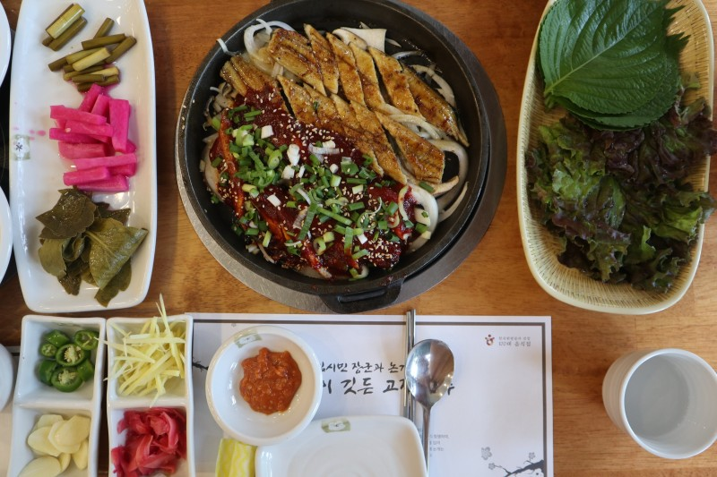

About Jinju
Jinju is the city of Korea. In Gyeongsangnam-do, where most of the population is concentrated in the eastern part, it serves as a central city in the western part of Gyeongsangnam-do.
Symbol Hamo
-
Inspired by otters, natural monuments that live in Jinyang Lake and Nam River in Jinju A character with a cute appearance was created so that anyone can feel friendly. To symbolize pearls, a shell on top of the head and a pearl necklace on the neck were put in. I tried to embody the 'water' that represents pearls by putting a wave pattern on the tail. Through this, the clean image of Jinju was emphasized, and the water was reminiscent of the tourist attraction of Jinju, the owner, and made it stand out. 'Hamo' is a pearl dialect that contains the meaning of agreement and affirmation. It is a character that delivers a message of hope to those who are troubled and encourages them.
Food Eel
- 
-
Jinju's eel It is Jinju's local food that has no fishy smell and is plain and nutritious. There are grilled sea eels and grilled freshwater eels in Jinju. Grilled sea eel is fresh conger eel caught in the South Sea, first grilled over a charcoal fire, aged at a low temperature, and then grilled again over a briquette fire, so there is no fishy smell and the taste is light and fragrant. Grilled freshwater eel is also grilled twice with a sauce with a unique flavor, so it does not feel greasy and has excellent taste. Jinju's grilled eel is one of the representative local foods of Jinju, where you can feel the true taste of grilled eel that is not greasy and has a very refreshing aftertaste.